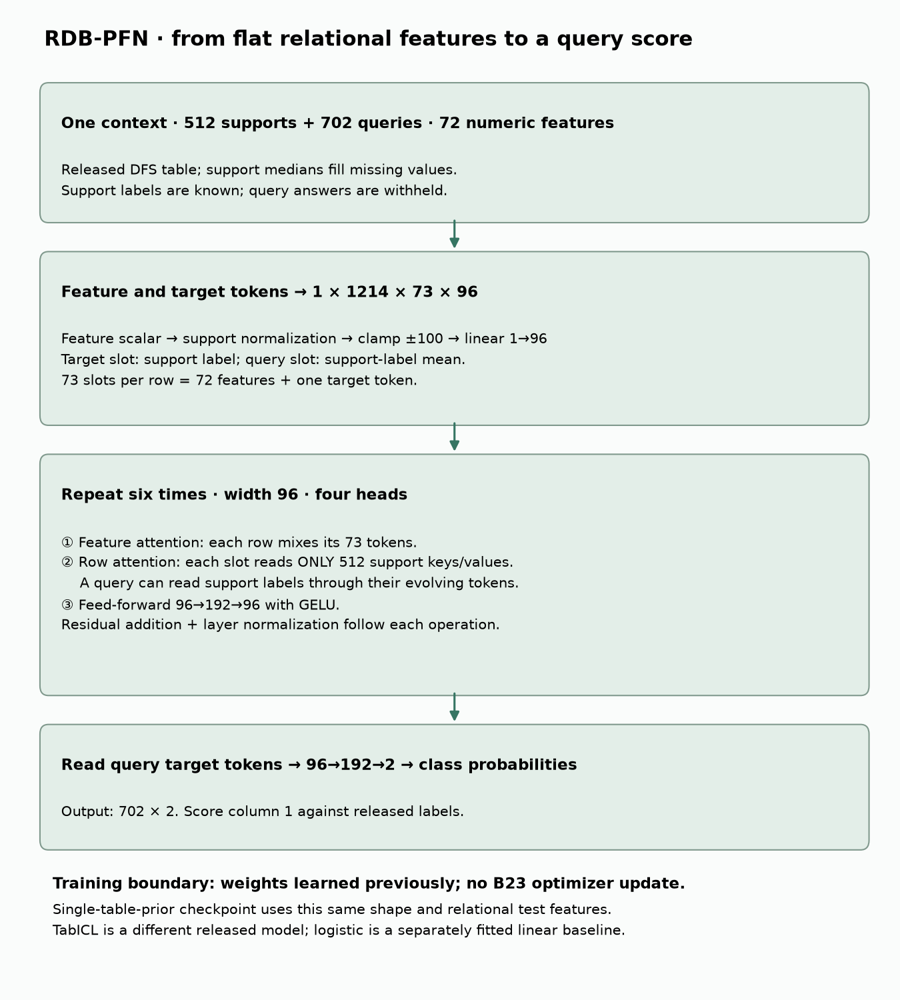
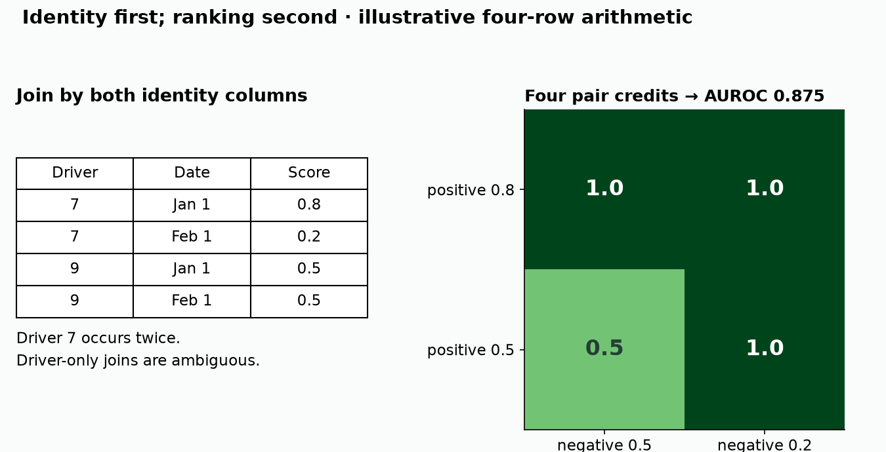
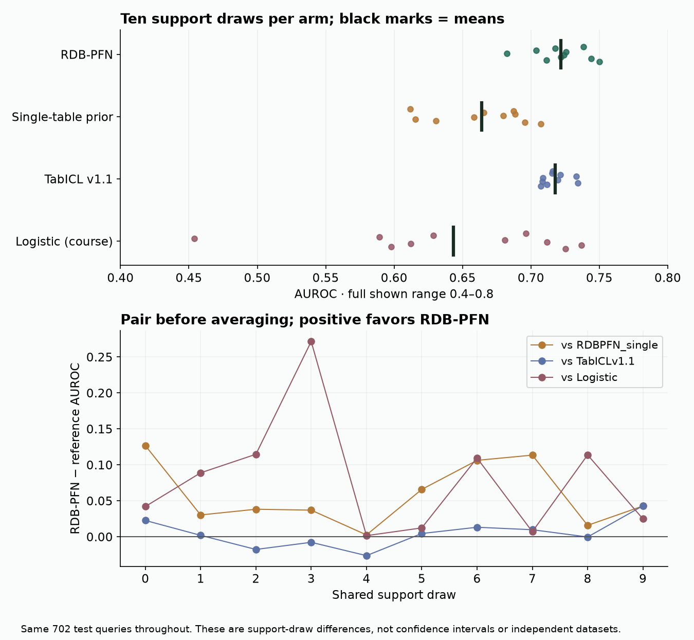

B23 · Reproduce one declared comparison¶
The win: turn a published number into an inspectable chain of source, inputs, predictions and justified conclusions.
Previous: B22 · support-state interventions · Core prerequisite: B19 · benchmark evidence · Metric contract: B19a · Next: B24 · research defense
Student notebook · Executed notebook · Reference card · Frozen reproduction contract
1 · First recall, then inspect¶
Without looking back: why must two methods share the same support rows? Why does a valid foreign key fail to prove that information was available at prediction time? What did B22's identity intervention check?
B22 changed one internal operation while preserving the comparison around it. B23 applies the same discipline to an entire experiment. We freeze the population, labeled context, checkpoint, preprocessing and metric. Then we ask two different questions: did the declared computation run faithfully, and what scientific claim does its output support?
A support set is the labeled training context supplied to a predictor. A query is a row whose answer is withheld until scoring. A checkpoint is a saved set of learned weights. A protocol specifies the full procedure that turns these inputs into a score. Provenance records where each artifact came from and which exact bytes were used.
In plain terms. Matching the number is one piece of evidence. It does not recover missing history about how the data or checkpoint was created.
2 · Freeze one published comparison¶
Our named experiment is B23-RDBPFN-F1-COMPARISON: the rel-f1/driver-dnf column of RDB-PFN v5 Table 9, at context size 512. Read the primary paper's evaluation protocol and raw results, then compare them with the archived release contract.
The released task contains 11,411 training rows, 566 validation rows and 702 test rows. Each row has a driver and a prediction date. The complete identity is (driverId, date); driver alone is not unique. Each of ten fixed random draws selects 512 training rows without replacement. Every model receives the same draw and the same test population. The released evaluation does not use validation or test answers to select a checkpoint.
| Arm | What changes? | What is fixed? | Evidence lane |
|---|---|---|---|
| RDB-PFN | Released relational-prior checkpoint | Released DFS features, support draws, test rows | Published selected comparison |
| Single-table-prior ablation | Released single-table-prior checkpoint | Same evaluation inputs and backbone shape | Published selected comparison |
| TabICL v1.1 | Released tabular predictor, 32 estimators | Same materialized features and supports | Published selected comparison |
| Logistic regression | Fresh linear classifier fitted per support draw | Same materialized features and supports | Course baseline |
Deep Feature Synthesis (DFS) creates a flat table by aggregating information along database relationships. Thus, even the single-table-prior ablation receives relationally constructed features here. Its name describes its pretraining prior, not a removal of relational information from the test inputs. Do not interpret this comparison as raw tables versus relations.
Held fixed: query identities, released labels, support indices, source versions and the three published model configurations. Varied: predictor or checkpoint. Measured: AUROC, support-draw variability and paired score differences. Pretraining data and compute are not equalized, so this is not a clean causal experiment on architecture alone.
The baseline uses median imputation, population-standard-deviation scaling and logistic regression with fixed C=1, lbfgs, and at most 1,000 iterations. Imputation and scaling are fitted on the 512 supports only. An entirely missing column becomes zero. A constant column uses scale one. No tuning is performed; nonconvergence is a failure. All ten fits converged.
Logistic regression computes a weighted sum of the features plus an intercept, then maps it to a probability with the sigmoid function, 1 / (1 + exp(−z)). Its training minimizes binary log loss with regularization. C controls inverse regularization strength. It is a useful simple baseline; beating it does not establish superiority to tuned trees.
3 · Follow the actual model path¶

The RDB-PFN checkpoint uses six blocks, hidden width 96, four attention heads and a feed-forward hidden width of 192. Each scalar feature is normalized using support statistics and projected into 96 numbers. A separate target token carries each support label. Query target slots contain the support-label mean, never the true query answers.
Within a block, feature attention mixes tokens belonging to one row. Row attention lets every row read the support rows; query rows do not become keys for other queries. A feed-forward transformation then updates each token. Residual additions preserve the previous state, and layer normalization controls its scale. The classifier reads the query target token and emits two class scores, converted into probabilities.
With batch size one, 512 supports, 702 queries and 72 input features, the token tensor has shape 1 × 1214 × 73 × 96. The extra feature slot is the target token. The final probability array has shape 702 × 2. Frozen weights do not mean constant predictions: changing the labeled support context changes the attention computation.
TabICL is a separate model: column-wise feature processing, row representation learning and in-context class prediction. Its 32 estimators combine predictions from the released inference ensemble. We preserve its implementation rather than substituting the RDB-PFN forward pass. See TabICL's primary paper and the pinned inference command below.
Scope check. These are fresh predictions from existing checkpoints. Foundation pretraining is not rerun. The paper appendix mentions width 128; the released RDB-PFN checkpoint uses 96. That discrepancy remains in the deviation ledger.
4 · Reconstruct the metric from the rows¶
AUROC is the fraction of positive–negative pairs correctly ordered by the score, awarding half credit for ties. It measures ranking, not calibration. A calibrated probability of 0.8 would mean that roughly 80% of comparable predictions succeed; AUROC cannot establish that property. B19a's distributional contract therefore remains relevant even when this paper's target is a ranking score.
Worked example. Suppose labels are [1, 0, 1, 0] and probabilities are [0.8, 0.5, 0.5, 0.2]. The positive score 0.8 beats both negatives: two points. The positive score 0.5 ties one negative and beats the other: 1.5 points. AUROC is 3.5 / 4 = 0.875.
Before scoring, join predictions to labels by their complete keys. A shuffled prediction file is acceptable after the join. A duplicated key or missing query must fail. Merely checking that both arrays have 702 entries can pair the wrong answers.

A hash is a fingerprint of file bytes. It detects changes relative to an expected fingerprint. It does not prove that the original data was correct or historically available. Our audit checks hashes, then separately checks identities, support membership, labels, probability ranges and metric arithmetic. A checksum alone would accept a consistently rehashed but semantically invalid packet.
5 · Pair before you average¶
Worked example. Two supports give model A AUROCs [0.60, 0.90] and model B [0.65, 0.88]. Paired B-minus-A effects are [+0.05, −0.02], averaging +0.015. The average difference is positive even though B loses on one draw. Reordering B without matching draw identities would distort the per-draw uncertainty.
One shared support draw; one signed difference
For each draw s, define d_s = AUROC(RDB-PFN, s) − AUROC(reference, s). Report all ten values, their mean, sample standard deviation and number greater than zero. The sample standard deviation measures dispersion around the mean using denominator n−1, here nine. It is not a confidence interval and is not an estimate of variation across databases. These ten draws share one fixed test population.
| Model | Fresh mean AUROC | Sample SD across supports | Published target |
|---|---|---|---|
| RDBPFN | 0.721938 | 0.019983 | 0.7219 |
| RDBPFN_single | 0.663990 | 0.034177 | 0.664 |
| TabICLv1.1 | 0.717571 | 0.009769 | 0.7176 |
| Logistic | 0.643294 | 0.085891 | Course baseline |

All three fresh published-model means round to their four-decimal table targets. They also satisfy the predeclared absolute mean-distance tolerance of 0.02. CLOSE is our descriptive numerical status, not statistical equivalence or complete historical reconstruction.
The RDB-PFN advantage over TabICL is approximately 0.00437 AUROC, positive on 6/10 draws. Its advantages over the single-table-prior ablation and fixed logistic baseline are positive on 10/10 draws, averaging approximately 0.05795 and 0.07864 respectively. The logistic baseline is particularly sensitive to which supports are selected.
These observations support a narrow statement about this released task and protocol. They do not establish a universally superior architecture, a new independent dataset replication, or superiority to a tuned tree system. The source experiment and earlier lessons have already exposed this test set; it is not an untouched thesis confirmation set.
6 · Keep unresolved history visible¶
| Question | B23 answer | Consequence |
|---|---|---|
| Did all declared evaluations finish? | Yes: 30 published-model evaluations and 10 baseline fits | No missing seeds hidden in the average |
| Were predictions generated afresh? | Yes, new immutable B23 attempts | Old scores are references, not new outputs |
| Do the paper targets match numerically? | All three means round to the targets | Selected numerical agreement |
| Were all raw DFS features rebuilt? | No | Raw feature generation remains unverified here |
| Was every raw field historically available? | Not established | No leak-free deployment claim |
| Were foundation weights retrained? | No | No pretraining reproduction claim |
| Has the learner defended the result? | Pending | Author execution is not learner mastery |
The released labels complement a current reconstruction of the raw 30-day DNF indicator. We preserve the released orientation for the published comparison. To reinterpret a binary score under the opposite label orientation, complement both labels and probabilities. Complementing only one reverses the ranking meaning.
A previous audit checked selected timestamp features and reconstructed raw labels. B23 authenticates and cites that inherited work; it does not claim a new SQL reconstruction or proof about every historical feature. Released input matching and historical availability are separate obligations.
Environment deviation. Published-model inference uses the pinned Python 3.11, NumPy 1.26.4 and scikit-learn 1.6.1 environment. The separately labeled course baseline ran locally with NumPy 2.5.0 and scikit-learn 1.9.0. Its receipt records these versions. Model-specific preprocessing and unequal pretraining budgets also prevent a claim of fully matched computational cost.
Cost discipline. The approved total cap is US$10, with a planned stop at US$8 and US$2 reserve. The pilot must pass identity and metric checks before the remaining model runs start. Maximum reserved worker time is 5,960 seconds. At the verified allocation rate, worker reservations plus a US$2 overhead allowance total US$3.6909712. This is a conservative envelope, not an itemized invoice. Failed checks and preparation count toward the separate 3,600-second local execution cap. Current Modal rates.
7 · Implement the evidence contract¶
Open the portable notebook. It includes the immutable evidence and diagrams; the default execution is an offline rescore of B23's fresh author predictions. It does not silently launch another paid inference run.
- Admit the grid. Require exactly four arms × ten draws, with 702 query predictions and 512 supports per run. Reject duplicates, unexpected arms, incomplete rows and invalid scores.
- Pair by draw. Build the comparison by run identity, not array position. Return every signed difference, its mean, sample SD and win count.
- Classify the evidence. Keep completeness, numerical closeness, historical identity and availability separate. Never turn author checks into a learner pass.
Each function is called by the final report, so replacing it with a constant answer fails. The independent checker rescored all 28,080 predictions and reconstructed the logistic preprocessing and sigmoid probabilities. Adversarial tests alter bytes, query keys, supports, labels, probabilities and run coverage, including an omitted baseline fit.
Visible implementation and runnable fresh lane¶
The notebook includes the readable RDB-PFN forward pass, unchanged released evaluation loop, baseline fitting code and metric/audit code. The primary model implementation is linked alongside the mechanism, not hidden behind an API call. Visible model · Inference loop · Baseline implementation.
For a new full inference run, use a clean Python 3.11 environment with pinned requirements and Torch 2.5.1, then run from the repository root:
python labs/_fetch_l166.py --out /tmp/b23-new-input
python labs/_run_l166.py --input /tmp/b23-new-input --out /tmp/b23-new-predictions
The default evaluator executes all 30 published-model evaluations. Use fresh output paths; never overwrite a completed run. The reproduction contract includes the separate baseline and author cloud commands, source revisions, deviations and budget gates. A learner rerun needs its own budget; these commands do not authorize spending beyond the completed author ledger.
8 · EXIT: write a defensible claim¶
Write a short B24 handoff containing the exact experiment identity, one supported empirical statement, one unsupported broader statement, the strongest simpler-baseline result, the unresolved historical-availability gap, and a falsification test on an untouched task. Explain why repeating this task is not new cross-database evidence.
Rubric, 0–2 each: protocol validity, baseline fairness, reproducibility, evidence interpretation and falsifiability. Pass requires at least 8/10, no zero and no unresolved leakage in the proposed deployment claim. This selected release evaluation is complete; historical reconstruction remains incomplete. No numeric score overrides those boundaries. Learner status remains PENDING_WRITTEN_DEFENSE until your work is assessed.
Revisit after one, seven and thirty days: reconstruct AUROC on four rows, explain the pairing unit, and name a claim a checksum cannot establish. Ask the agent about any unclear step, or paste your EXIT defense for feedback.